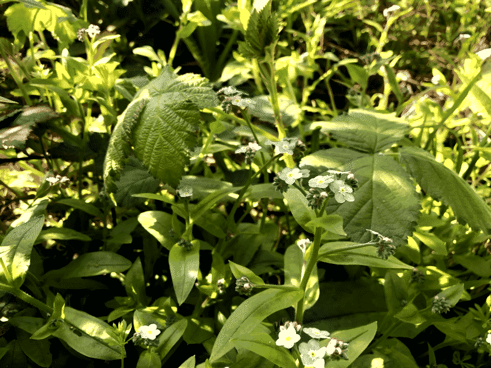
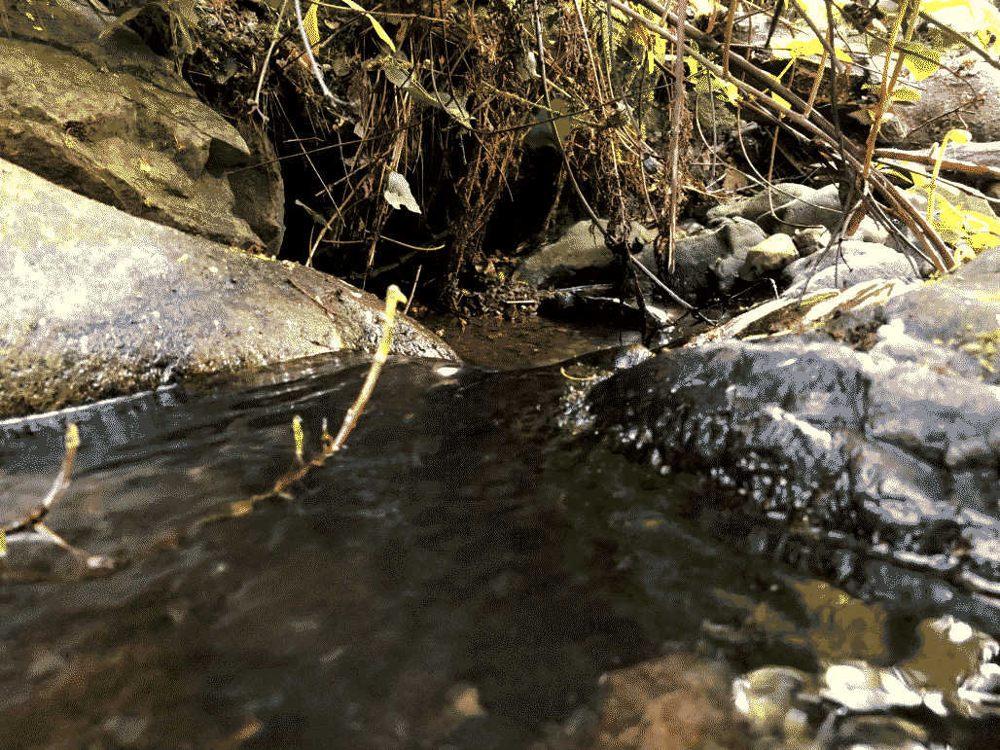
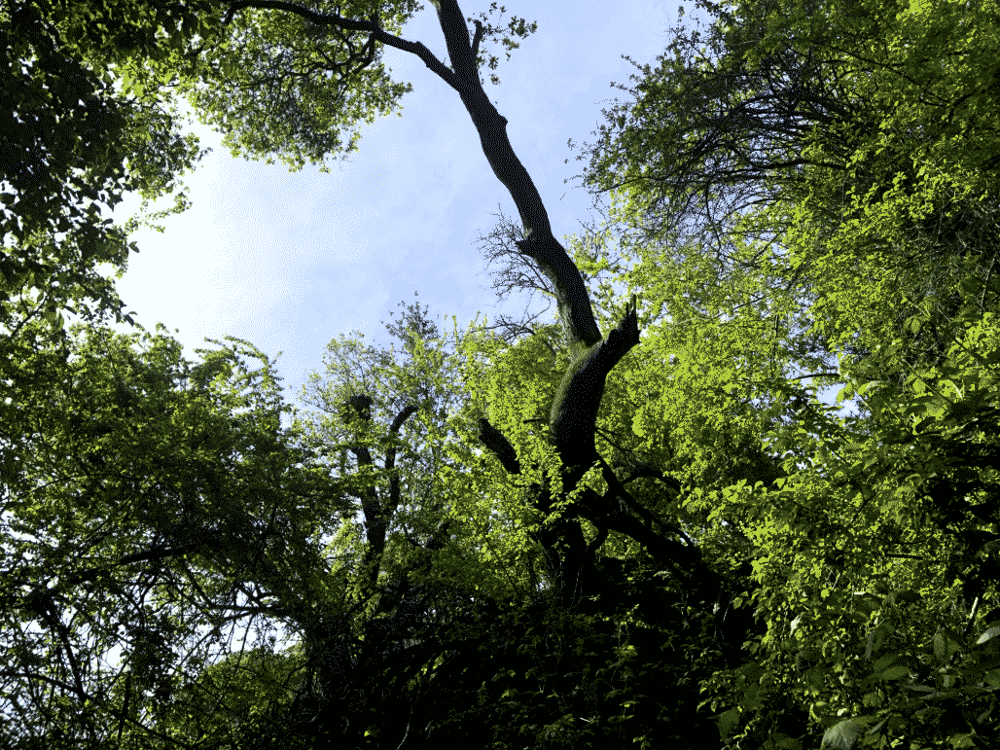
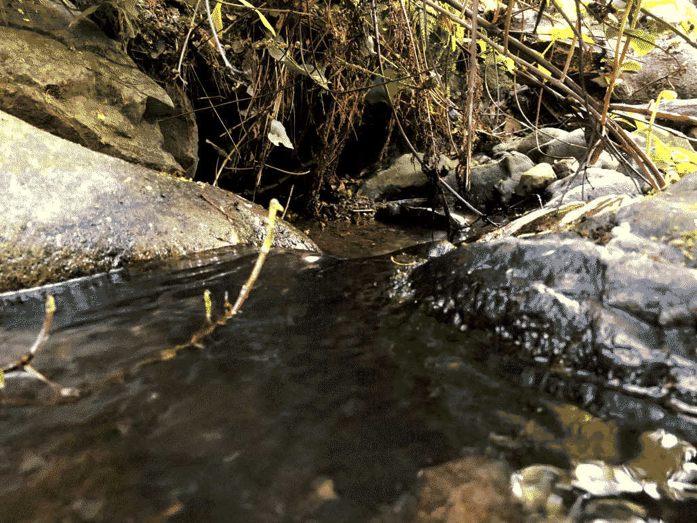
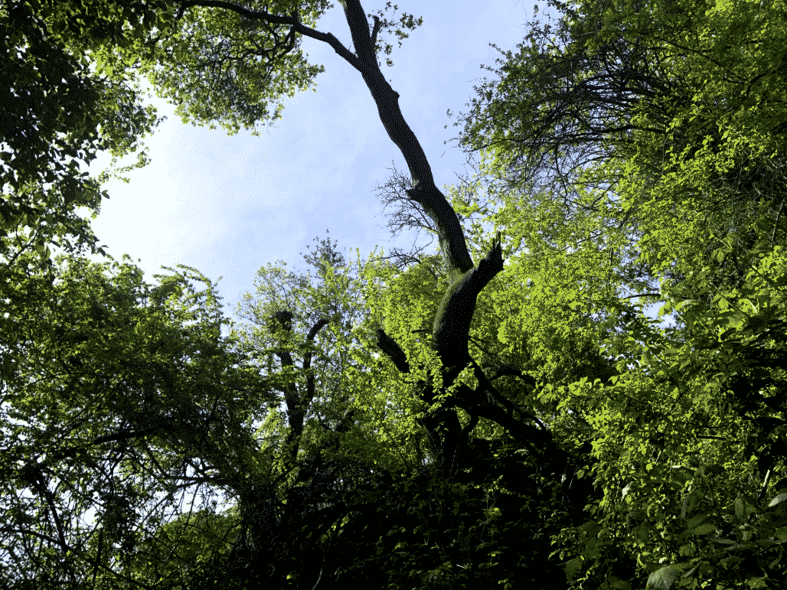
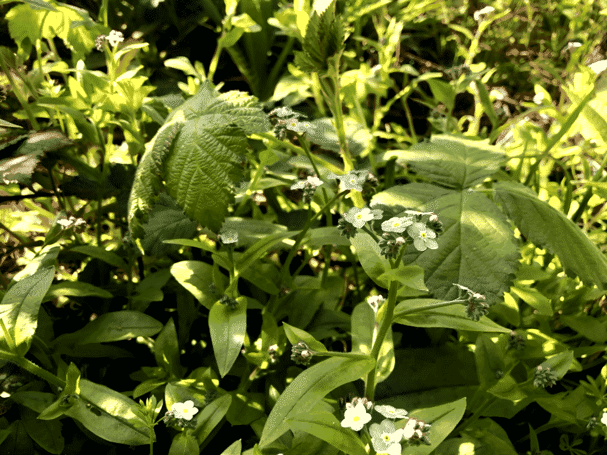
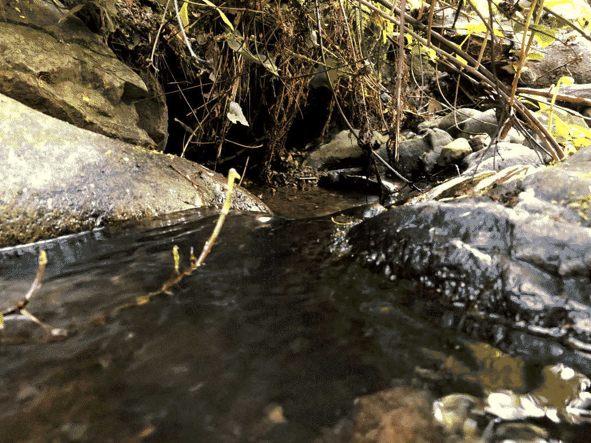
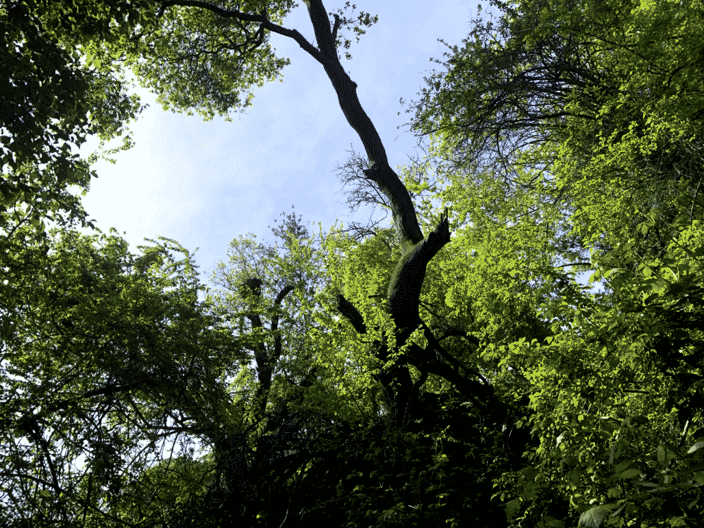

Strawberry Canyon Hike 080421
After realizing we didn't have enough time to find the source of Strawberry Canyon creek (in Berkeley), we contented ourselves with taking some photos and audio downhill of where the creek starts.


 





After realizing we didn't have enough time to find the source of Strawberry Canyon creek (in Berkeley), we contented ourselves with taking some photos and audio downhill of where the creek starts.


